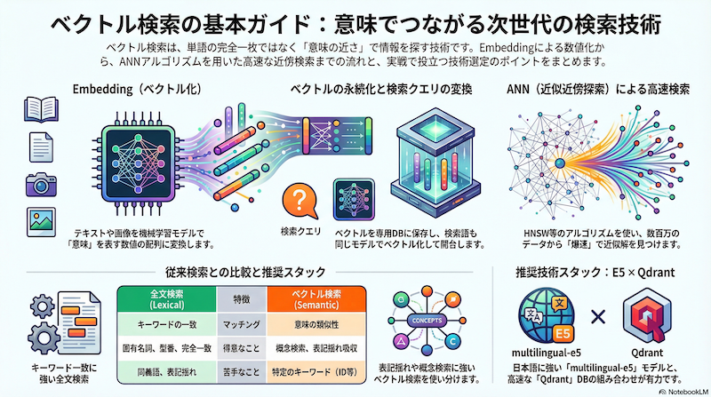

ベクトル検索の基本と実践
前回の記事では、少しマニアックな「LSH Cascade」という独自のアプローチについて書きましたが、今回は基本に立ち返って「ベクトル検索（Vector Search）」そのものの一般的な仕組みや、私が普段利用している技術スタックについてまとめたいと思います。
近年、RAG (Retrieval-Augmented Generation) の流行とともに必須技術となりつつあるベクトル検索ですが、その構成要素を分解してみると、非常に興味深い技術の集合体であることがわかります。
ベクトル検索の構成要素
ベクトル検索システムを構築するには、大きく分けて以下の4つのステップ（構成要素）が必要です。
- Embedding化（ベクトル化）: 検索対象となるドキュメント（テキスト、画像など）を、意味内容を表す数値の配列（ベクトル）に変換します。
- ベクトルの永続化: 生成されたベクトルデータを、後で検索可能な形式で保存します。
- クエリのEmbedding化: ユーザーが入力した検索キーワードや文章を、1.と同じモデルを使ってベクトルに変換します。
- ベクトルの近傍検索: クエリベクトルと「距離」が近い（＝意味が似ている）ドキュメントベクトルをデータベースから探し出します。
従来のキーワード検索が「単語の出現」に着目するのに対し、ベクトル検索は「意味の近さ」を計算するのが最大の特徴です。
文書をベクトル化する (Embedding)
テキストをベクトルに変換するには、Embeddingモデルと呼ばれる機械学習モデルを使用します。これはテキストを入力として受け取り、例えば768次元や1024次元といった固定長の浮動小数点数のリストを出力します。
モデルの種類と多言語対応
モデルには様々な種類がありますが、重要なのは言語対応です。英語専用のモデルで日本語を処理しても、良い検索結果は得られません。 私が主に使用しているのは、多言語に対応したモデルです。これらは1つのモデルで日本語、英語、中国語などを扱うことができ、言語を跨いだ検索（クロスリンガル検索）も可能になります。
必要なリソース (CPUでも動く？)
「AIモデル」というと高価なGPUが必要なイメージがありますが、推論時Embeddingだけであれば、最近のライブラリは非常に最適化されています。 特に「FastEmbedding」のような軽量ライブラリや、ONNX Runtime、モデルの量子化（Quantization）を活用することで、CPUのみの環境でも実用的な速度で動作させることが可能です。これはローカル環境での開発や、コストを抑えた運用において大きなメリットです。
ベクトルデータベースの種類
生成した大量のベクトルを高速に検索するためには、専用のデータストアが必要です。
- 専用Vector DB: Qdrant, Pinecone, Milvus, Weaviate など。ベクトル検索に特化しており、高速で多機能です。
- 汎用DBの拡張: pgvector (PostgreSQL), Elasticsearch など。既存のスタックを利用できるのが強みです。
- ローカル/組み込み向け: DuckDB, SQLite (sqlite-vss), Chroma (ローカルモード) など。ファイルベースで手軽に利用できます。
近傍ベクトルを見つける (ANN)
数百万、数億というベクトルの中から、クエリに最も近いものを1つずつ距離計算して探す（全探索）のは、計算コストが高すぎて現実的ではありません。 そこで使われるのが ANN (Approximate Nearest Neighbor: 近似近傍探索) アルゴリズムです。「厳密に一番近い」保証は捨てますが、実用上十分に近いものを「爆速」で見つける技術です。
HNSW (Hierarchical Navigable Small World)
現在、最も一般的でデファクトスタンダードとなっているアルゴリズムが HNSW です。グラフ構造を用いて、高速道路のような階層的なリンクを辿ることで、目的のベクトル付近まで一気に移動し、最後は詳細に探索します。
前回のブログで紹介した私の挑戦（LSH Cascade）は、この主流であるHNSWを使わず、LSH（Locality Sensitive Hashing）と転置インデックスを組み合わせることで、「さらに枯れた技術（Zopeなどの既存インデックス）」の上でベクトル検索を実現しようという試みでした。
メタデータなどでのフィルタリング
実際のアプリケーションでは、「類似したドキュメント」だけでなく、「2024年以降の記事」かつ「タグがニュース」のもの、といった絞り込みが必須になります。 これをメタデータフィルタリングと呼びます。 ベクトル検索の前にフィルタリングを行うか（Pre-filtering）、後にあうか（Post-filtering）で性能や精度が変わりますが、QdrantなどのモダンなVector DBは、このフィルタリングをインデックス構造と統合して非常に効率的に行えるようになっています。
いままでの全文検索との違い
| 特徴 | 全文検索 (Lexical Search) | ベクトル検索 (Semantic Search) |
|---|---|---|
| マッチング | キーワードの一致 | 意味の類似性 |
| 得意なこと | 固有名詞、型番、完全一致検索 | 概念検索、表記揺れ吸収、曖昧な検索 |
| 苦手なこと | 同義語（辞書が必要）、表記揺れ | 特定のキーワード（IDなど）の厳密な検索 |
最近のトレンドは、これら両方の長所を組み合わせたハイブリッド検索です。
私が使っている技術スタック
最後に、私が現在のプロジェクトや実験でメインに使っているスタックを紹介します。
- Embeddingモデル: multilingual-e5 シリーズ (特に
largeやbase)- 日本語の性能が非常に高く、デファクトスタンダードの一つです。他にもBGEやOpenAIのモデルも試しましたが、ハンドリングのしやすさからE5をメインに据えています。
- データベース: Qdrant
- Rust製で非常に高速かつ、APIが直感的で使いやすいです。フィルタリング機能も強力で信頼しています。
- ローカルデータ処理: DuckDB
- ローカルでデータ分析や一時的なベクトル処理を行う際に利用しています。SQLでベクトル演算（Cosine similarityなど）が扱えるのが非常に便利です。
- その他: 状況に応じて、マネージドSaaSも利用しています。
ベクトル検索はまだまだ進化の途中ですが、道具を選んで組み合わせることで、個人の開発環境でも十分に強力な検索システムを作ることができるようになっています。
